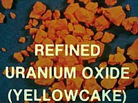
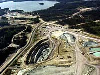
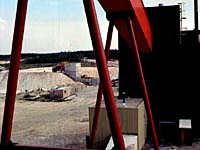

History
Operating Mines
Proposed Mines
Location
Description
Terms
Mining & Milling
Waste Management
Uranium Uses


 Of all the major fuels that mankind has ever used for heat, only one -- uranium -- belongs to this century. While it had been used for hundreds of years to add colour to glass and ceramics, only in 1939 was it discovered that uranium had the ability to release an incredible amount of energy. The history of the uranium industry and nuclear energy in Saskatchewan is well documented.
| |||
Saskatchewan records from 1936 indicate the discovery of the uranium mineral pitchblende. It was not until the use of the atomic bomb in World War II that the interest in Saskatchewan's uranium deposit's increased. In 1952 Uranium City was established as a base for uranium mining in the Beaverlodge area. During the 1970's more extensive ore deposits were discovered in the Athabasca Basin in northern Saskatchewan. By the time the Uranium City mines closed in the 1980's, mines at Key Lake, Rabbit Lake and Cluff Lake were established. High grade uranium is mined at that locations and because of this, Saskatchewan is currently the largest uranium producing region in the world with an annual productive capacity of approximately 30 million pounds U3O8.
|
Producers of Uranium Today Northern Saskatchewan contains some of the world's richest deposits of uranium. Open pit mines at Cluff Lake, Key Lake and Rabbit Lake extract ore from very rich, shallow ore deposits. The underground mine at Cluff Lake extracts the ore from a deeper ore body. Each mine has its own mill where uranium ore is processed into a product called uranium concentrate or yellowcake. Operating Saskatchewan Uranium Mines Proposed Saskatchewan Uranium Mines
|
Economic Impact for Saskatchewan - Importance of Industry
Saskatchewan uranium is sold by the uranium producing companies to electrical generating companies in countries that use nuclear energy to produce electricity. Usually, the contracts are on a long term basis. All contracts must be approved by the Canadian government. The Canadian government has control over uranium exports. It enforces adherence to the Treaty on the Non-Proliferation of Nuclear Weapons (NPT) and requires that the country purchasing the uranium meets Canadian safeguard requirements. The uranium market depends a great deal on world demand for nuclear generated electricity. The selling price of uranium generally fluctuates according to supply and demand. Mining uranium in Saskatchewan has economic benefits for the province. These include:
|
The Future: How Much is Left? Canada has a significant portion of known uranium resources in the world and the bulk of these resources are located in Saskatchewan. Uranium deposits in Saskatchewan are large and contain high-grade ore, therefore, can be extracted at production costs below those in many other parts of the world. Saskatchewan's uranium resources are sufficient for more than 40 years at current rates of production. |